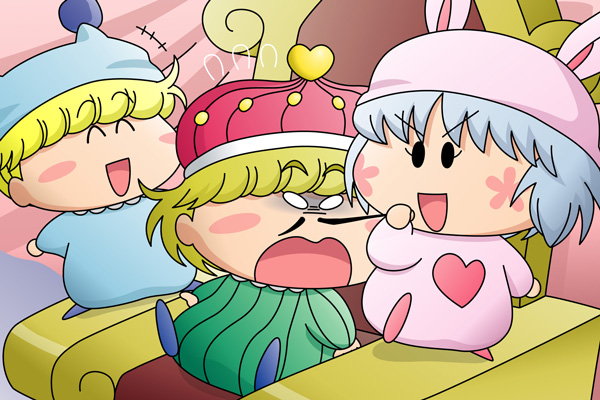

パピィ「マルモ国王様ごめんなちゃい。
ちょっと我慢ちてね」
マルモ「な、なんじゃ…？
いたたたた…っ」
サリア「あらあら」
突然王室に現れたパピィ。
椅子に飛び乗り、マルモ国王の自慢のひげを思いっきり引っ張ります。
あまりの痛さにマルモも為す術なく、またサリアの方はその光景をじっと見守っていました。
マルモ「パピィ、いったい何の真似じゃ…いたたっ」
パピィ「もうちょっとの辛抱よ」
ミルモ「ん？いったい何やってんだ？」

マルモ「おっ、ミルモか。
何だかよく分からんがこのパピィを止めてくれ」
ミルモ「んーー。
…なかなかおもしれーことやってんじゃねーか！」
ミルモも面白半分にもう片方のひげを引っ張ります。
パピィ「あたち前から一度やってみたかったのよね」
ミルモ「おぅ、パピィもやっぱりそう思うだろ？」
マルモ「おのれミルモめ許さんぞ。
後で覚えておれ！ …いたたたっ」
サリア「あらあらミルモまで、いけませんね」
今度は騒ぎを聞いたムルモがやってきました。
ムルモ「おとうしゃま！？」
パピィ「ムルモ！」
ムルモ「パ、パピィ！？
いったい何やってるんでしゅか！？」
パピィ「どう？これで思い出ちた？」
ムルモ「だからいったい何を思い出すと言うんでしゅか！」
パピィ「しょんな…」
ムルモ「ボクはもう許さないでしゅよ！
しょっかくビーム！！」
パピィ「ぎゃあーっ」
ミルモ「どゎーーっ」
マルモ「ぐふっ…」
パピィとミルモ、そしてマルモまで真っ黒こげになってその場で倒れました。
マルモ「ムルモや…ちょっとは手加減してくれ…」
ムルモ「ちょっとやり過ぎちゃったみたいでしゅね、きゃは☆」
マルモ「ええい、ミルモとパピィはしばらく地下牢で反省するんじゃ！」
パピィ「やっぱり思いだちてくれないのね…ムルモ…」
ムルモ「・・・・・・」
兵士たちがパピィとミルモをお城の地下牢へと連れて行きました。
別の地下牢には逃げ遅れたワルモ団がすでに捕まっていました。
イチロー「オレたちの出番がこれだけとはあんまりだぞ」
ジロー＆サブロー＆シロー＆ゴロー「そうだ！そうだ！」
前回ワルモ団に入れ知恵させられたパピィの次の行動を描きました。これは痛い…よい子の皆さんは決して真似しないよーに。なおこれはワルモ団からの指令ではなくて、パピィの独断の行動です(^^;。
本当はムルモが現れたシーンを描きたかったのですが、妖精４人をひとまとめにするアングルをどうやっても描くことが出来なくて、結局今回の絵になりました。ムルモとパピィが言い合うところの表情については、皆さんにてご想像にお任せします。
(2006/8/9)